24 TRANSMISSION
- Path
- Descriptions > 24 TRANSMISSION
- Kind
- system description
- Applies to
- engines: 2.0 16V, 2.8 JTD 8V; all production periods
- Interactive page
- https://sloeber94.github.io/elrnDB-fDct/en/#/244000424
Applies to: engines: 2.0 16V, 2.8 JTD 8V; all production periods; only with equipment: 4X4
INTRODUCTION
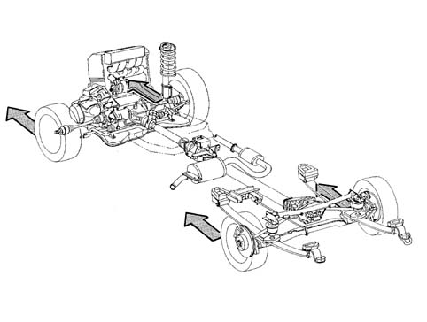
Use of the vehicle
Switching on the four wheel drive
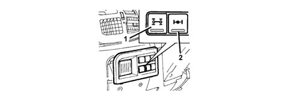
Locking the rear differential (where fitted)
Use of reduced gears (where fitted)
Applies to: engines: 2.0 16V, 2.8 JTD 8V; all production periods
Applies to: engines: 2.0 16V, 2.8 JTD 8V; all production periods; only with equipment: 4X4
Applies to: engines: 2.0 16V, 2.8 JTD 8V; all production periods
Applies to: engines: 2.0 16V, 2.8 JTD 8V; all production periods; only with equipment: 4X4
Drive torque and grip
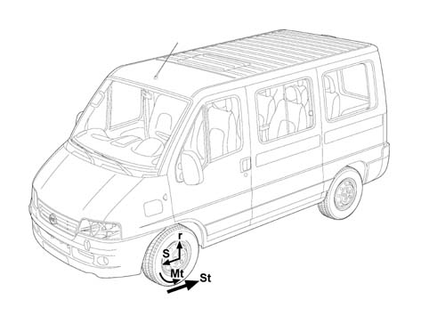
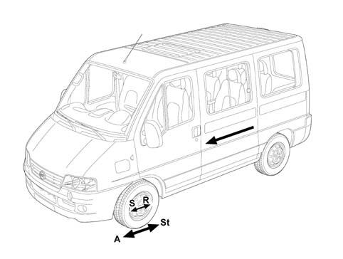
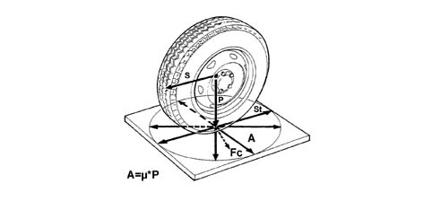
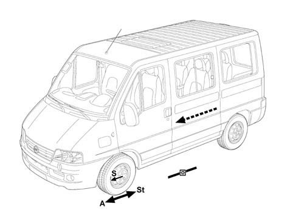
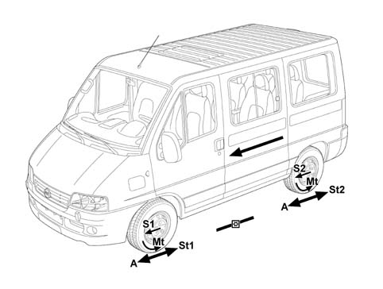
Four wheel drive
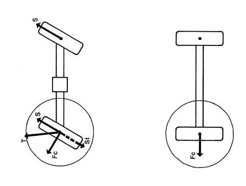
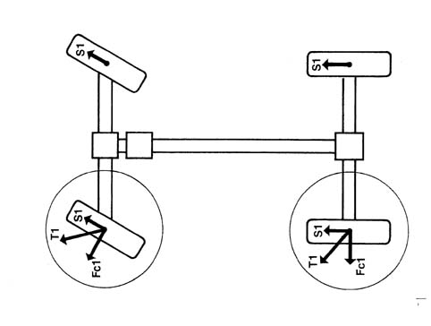
Permanent four wheel drive
Four wheel drive that can be switched on
General diagram showing 4x4 transmission with mlgu gearbox
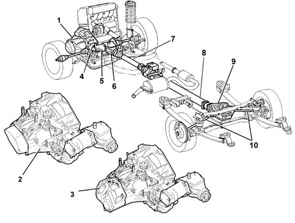
Drive transmission
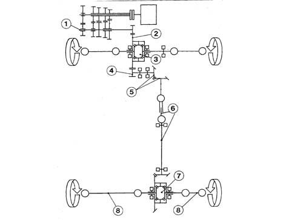